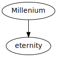

Romans 8:21
creation longs for God’s salvation.
In this season evangelical Christianity is at the height of this false teaching:
An over-realized eschatology. If there is healing through the cross then we want health now; for by his stripes then we are healed. We should be able to name and claim our physical manifestation of God’s healing now.
Romans 8:23
We groan within ourselves for God’s adoptions as sons, the redemption of our bodies.
Paul is saying: the Holy Spirit is the down payment for something to come.
I will give Israel a heart of flesh and take away their heart of stone. Before we came to Christ we had a heart of stone. If we have a heart of flesh then we should want holiness.
We have a difficult time doing this; we have an old nature - a sin nature that draws us away from Christ to worldly things.
We physically don’t want to get up early in the morning doesn’t want to get out of bed and spend time with Christ. But the spirit planted in us does.
When we come to Christ God gives us a vacuous stomach and we long to eat. But to eat the hands (Holy Spirit) must move but the jaw (the flesh) does not open.
Romans 7:15
“Nothing good dwells in me, that is, in my [sin nature]”.
v21. “the law of God” = The holy spirit.
The body I have doesn’t want to cooperate with God.
Romans 8:15 “we’ve recieved the adoption as sons” but…Romans 8:21 - we’re waiting?
Adoption in the ancient world.
Romans 8:17-18
We are completely saved when we trust Christ. But our bodies have not been redeemed. We await the realisation of this within our physical selves.
| We are saved | being saved | shall be saved |
|---|---|---|
| salvation | sanctification | glorified |
| justified | acting out righteousness | redeemed body |
 eagerly : actively! Not a passive waiting
Remember when you trusted Christ? You knew you did not want to spend eternity in Hell. The fact that Christ would love you and give you eternity was in comprehendable. He has eternity waiting for me! But over the years our flame grows cold. We start out with the future in mind; before long we forget we are to live with a mindset looking to the future. One day our body will be risen; our minds wholed; our hearts healed. Like a couple waiting for the wedding night; like a pregnant woman waiting to give birth. Are we like this? Do we live with anticipation? How we live here determines the blessing we get in the millenium.
We were created for another world The Weight Of Glory - CS Lewis
Psalm 17:15
Remind yourselves who and what you are: A child of God!
Your hope is a living confidence. Phil 3:20-21
Like a deep sea diver who has to wear a suit because he wasn’t made to live in water; we wear a sinful body and we are not made to live in this world but with Christ in the next.